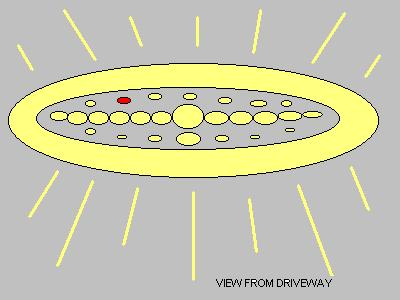
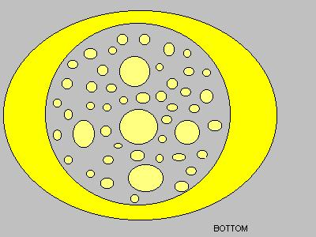
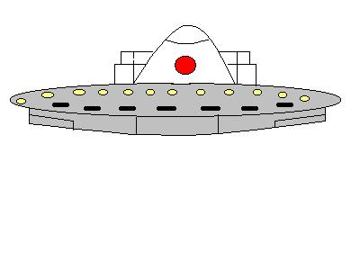

Subject: UFO Sighting
DATE: Monday morning, January 12, 2004,2:58 a.m.
Location: Yelton St., Amelia, OH (ClermontCounty)Summary:
A lighted, disc-shaped object with ahump was seen hovering silently over homes near Amelia, Ohio. Theobject, which moved in a bizarre fashion said by witnesses to "drop andstop" near the East Fork vicinity, was sighted by at least three separatepersons in Clermont County at 2:58 a.m., early Monday morning, January12. Also seen was a shadow that 'transformed into a ball' -- oneperson describing a peculiar tannish-brown object, separate from the lightedUFO-which strangely 'rolled down the side of a house.' The sighting wasfirst reported by one of the witnesses to the Cincinnati UFO hotline onMonday, investigation of the incident has turned up additional witnessesto the incident.
INCIDENT
At 2:58 a.m. on Jan. 12th, 2004, 21year old student Susan T. (name and phone number on file, deleted for thisreport) and her neighbor Jeff F. were in Susan's driveway when they spottedan object high in the sky. Susan states that the object was hardto describe but said it was disc shaped with a "hump" on top. Susansaid that at one point the object stopped and began to "drop." She thoughtit was going to hit the ground. However, it suddenly stopped andhovered and then it began to drop again. For several minutes thisobject "stopped and dropped." She finally lost sight of it as itwent below roof top level of her house.

Susan went on say that this objectmust have been "covered in a million lights" and also said there was ared rotating light on the top of the hump and white lights on what shedescribed as the belly or bottom of the object. She claims that the objectseemed to turn on its side so that she could see the bottom part. This turning or flipping caused the object to look like it was changingshapes and getting bigger. It was when the object turned up thatthe "bottom" was covered in white lights that dimmed then grew brighterand changed patterns.
Susan said that the object was -- fromher perspective-larger then your thumb at arms length. She does notknow how far away it was but said it may have been over as far as StateRoute 222. (There are several streets between there; Lumsford and EilerLanes.) She said the object may have been in the vicinity of the PhantomFireworks Factory on Route 125, somewhat to the west of her location.
Susan explained that she felt she wasbeing watched and grew very frightened. Both she and her neighbor(Jeff F.) sat in the truck and watched this object for over an hour. It was 4:15 a.m. when it finally slowly went down behind her house.
Susan then stated that something verystrange happened. Right after the object went behind her house shesaw what appeared to be a "shadow" on her roof that turned into a balland rolled down the roof. She said that her neighbor also saw theshadow.
Being very frightened neither personwent behind the house to see where the object went. Susan feels thatit did land or almost land. She also said that they did not see theobject leave because she ran in into house after it went below the rooflevel and did not look anymore.
I asked if there was any adverse reactionsby the animals in the area when the object was in view and Susan said thatdogs on the other streets were going wild when the object came down closeto the ground.
E-Renditions by 1st Witness
The second witness was then contactedfor his comments on the report. Jeff F., a 45-year old disabled residentof Amelia, states that at 2:58 a.m. on Jan 12th, 2004, he and Susan weresitting in his truck in her driveway when they spotted the object hoveringup over behind Susan's house. The object was up very high. They watchedas this object began to drop very fast. It then stopped and hoveredand then dropped again. This all happened very quickly. JeffF. states that he looked away for a second and the light was back up inthe sky in the same spot where they first saw it. It dropped andstopped again. This happened two times. Jeff F. says he doesnot know how big the object was but it had a slowly rotating red lighton top.
I asked if there were other lights andJeff said that he did not see any other lights nor could he tell the shape. He said they watched this object for an hour while they sat in his truck.
Jeff said this object eventually beganto descend behind Susan's house. Just as it went out of view a veryweird thing happened. Jeff F. said that a "light tannish brown shadowthat turned into a ball about the size of a cantaloupe" rolled down Susan'sroof.
"This happened so fast it was unbelievable,"he said.
When this happened both became frightenedand Susan ran in the house.
Both parties told me that there wasa garbage truck coming down the street at the time the object was in viewbut they do not think the garbage man saw the UFO.
E-DRAWING BY 2nd WITNESS
INVESTIGATORS COMMENT
Jeff F. and Susan's stories differ insome aspects. Both witnesses sounded sincere in their claims. Susan still sounds upset about what she saw and expressed to me that shehas received little sleep since her sighting. I find the incidentwith the "shadow" very curious. Both people expressed to me thatit was "something" other then just a shadow, but "shadow" was the onlyword they could find to describe it. It seems that this "shadow"upset both witnesses the most because the object was too far away to castany reflection on the roof.`
Susan is a 21 year old student at theUniversity of Cincinnati. She is out of school for the winter butwill be back in school for the spring term. She is taking courses(30-hours per week) to be become an RN.
45-year old Jeff F. is now disabledbut was formerly employed as an industrial engineer.
Susan informed me that she sometimeshas trouble sleeping and she and Jeff F. will sit in his truck to talkso as not to wake her family. That night they had spotted the UFO.
Susan says the object was in the westernskies when she first saw it. She says she does not know or could commenton how high the object was, saying she is not very good at judging distances.Jeff also said he could not guess on how high up this object was in darkness.
ADDITIONAL WITNESS
Through various telephone inquires ofneighboring residents in the area contact was made with one other possiblewitness.
A resident from a few blocks away (EilerRd) spoke with me by phone (name and phone number on file, withheld fromthis report) and said that around 3:30 a.m. on Monday morning, January12, she looked out her window towards the West and saw a bright light inthe vicinity of State Route 222. She did not know how high this objectwas but said it was a very big bright light above the trees. She said thatfrom her perspective, the object was in a westerly direction toward thelake (East Fork). She could not give a clear estimate of elevationbut claimed to have watched this object for a couple of minutes. Afterit allegedly disappeared she went back to bed.
The time and date of the claimed sighting, plus general location of thealleged object, matches detail furnished by the first two witnesses fromYelton St.
INVESTIGATION
I contacted the Clermont County Sheriff'sDept. at 513-732-2231. No UFO sightings were reported to them duringthis time frame.
Next, I contacted the Bethel PoliceDept. at 513-734-2256. No UFO sightings were reported during thistime to them.
Additionally, researcher Kenny youngplaced a call to the Clermont Sun Newspaper "465 E. Main St., Batavia,Ohio, 513-732-2511." He spoke with the editor, Art Hunter. He was told they had not heard of any UFO sightings.
Next, Young contacted the office atEast Fork Lake State Park 513-734-4323. The telephone receptionist,Sandy, said she was completely unfamiliar with UFO sightings around theEast Fork State Park vicinity. She did inquire about the witnesses. She explained that she would pass the information along to the supervisor,others in the office and the park rangers who patrol the lake at night. She took Young's telephone number and e-mail address and attached themto her report. Young said if anyone had information about this storyto feel free to contact him.
Filed 1/13/04
Donnie Blessing
Southern Ohio State Section Director MUFON

{kind=link}